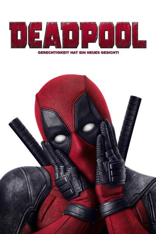

 
 IMDB-Wertung: 8.1 / 10
IMDB-Wertung: 8.1 / 10  Tomatometer: 84
Tomatometer: 84  Metascore:
Metascore: 
Der Ex-Elitesoldat Wade Wilson ist jetzt ein Söldner, der seine Freizeit am liebsten im Puff verbringt. Als er von seiner Krebserkrankung erfährt, unterzieht er sich einem riskanten Experiment im Labor des skrupellosen Ajax. Danach hat er enorme Selbstheilungskräfte, sieht aber hässlich aus – so will er seiner Freundin, der Prostituierten Vanessa Carlisle, nicht mehr vor die Augen treten. Also schlüpft Wade in einen rot-schwarzen Anzug mit Maske und versucht als Deadpool, Ajax dazu zu bringen, ihn wieder hübsch zu machen. Hilfe bekommt er von zwei X-Men, dem Metallmann Colossus und Negasonic Teenage Warhead, einer junge Frau mit explosiven Fähigkeiten. Allerdings geht Deadpool auf seiner Mission anders vor als andere Menschen mit Superkräften. Die offensichtlichsten Unterschiede sind sein pechschwarzer Humor, sein bissiges Mundwerk und seine Angewohnheit, sich direkt ans Filmpublikum zu wenden...
Jahr: 2016
Dauer: 108 Minuten
FSK: 16
Land: USA Studio: 20th Century FoxTonspuren:
Untertitel: Deutsch, Englisch,
Auflösung: 1080p (1920x808) Größe: 9564 MB
Genre: Action, Sci-Fi, Komödie, Abenteuer
Regisseur: Tim Miller
Drehbuch: Bernard Rose
Soundtrack:
Darsteller:
 Ryan Reynolds als Wade / Deadpool
Ryan Reynolds als Wade / Deadpool Karan Soni als Dopinder
Karan Soni als Dopinder Ed Skrein als Ajax
Ed Skrein als Ajax Michael Benyaer als Warlord
Michael Benyaer als Warlord Randal Reeder als Buck
Randal Reeder als Buck T.J. Miller als Weasel
T.J. Miller als Weasel Isaac C. Singleton Jr. als Boothe
Isaac C. Singleton Jr. als Boothe Morena Baccarin als Vanessa
Morena Baccarin als Vanessa Gina Carano als Angel Dust
Gina Carano als Angel Dust Kyle Rideout als Super Soldier #1
Kyle Rideout als Super Soldier #1 Jason William Day als Super Soldier #2
Jason William Day als Super Soldier #2 Stan Lee als Strip Club DJ
Stan Lee als Strip Club DJ Paul Lazenby als Flight Deck Guard
Paul Lazenby als Flight Deck Guard Victoria De Mare als Stripper , uncredited
Victoria De Mare als Stripper , uncredited David Longworth als Elderly Man , uncredited
David Longworth als Elderly Man , uncredited Donna Yamamoto als Oncologist
Donna Yamamoto als OncologistDatei: X:\Comic-Filme\Deadpool\Deadpool (2016, FSK16, 1920x808).mkv seit 27.05.2016
Festplatte: Comicverfilmungen+MusikCD
 Alle Filme aus Gruppe 'Comic-Filme\Deadpool'
Alle Filme aus Gruppe 'Comic-Filme\Deadpool'